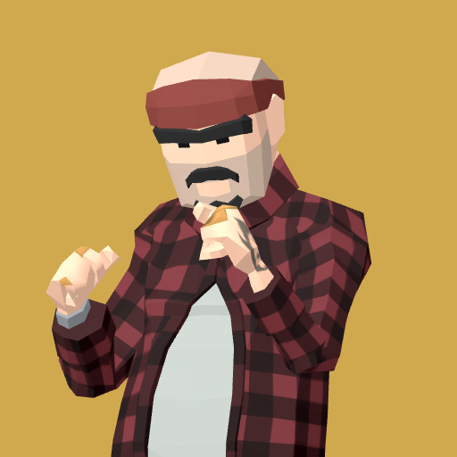

<- all projects

Concrete Crown
PC
Volume
Live
Lead your crew in a 3D street brawler. Claim thirty blocks and shape your city.
Dante returns to Meridian City to find his neighborhood caught between rival crews. Ruth wants him to protect the block, Viper wants him to rule it, and every victory brings another choice. Lead a crew in 3D street brawls across thirty connected blocks in five districts, facing four rival crews with boxing, brawling, grappling and kicking styles. Recruit twenty crew members, open and upgrade barbers, corner stores, garages and gyms between fights, and choose Protector or Kingpin after each first conquest on the way to three endings.